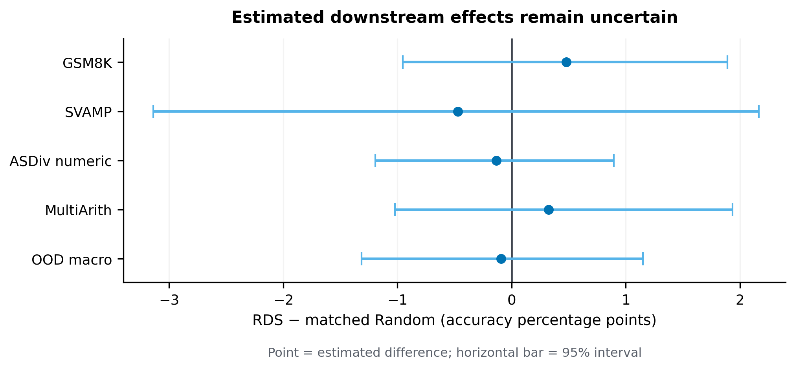
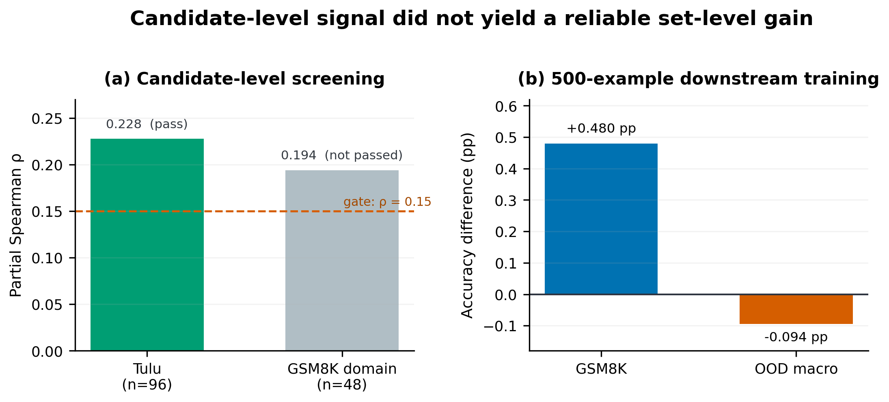

Completed
24 budget-equivalent LoRA SFT cells with separate cell-level audits.
This project studies a frozen RDS-based selection policy on Qwen2.5-1.5B Base. It compares targeted and matched-random training under the same example count, response-supervision budget, source composition, answer-length composition, and optimization protocol.
24 budget-equivalent LoRA SFT cells with separate cell-level audits.
No reliable accuracy advantage for RDS over matched Random in this setting.
A limited one-step candidate signal did not yield a stable set-level gain.
Measure fixed-state utility reliability before any cross-state comparison.
RDS lists used distinct query-bootstrap seeds and Random lists used distinct selection seeds. The RDS lists overlap substantially, so their effective independence is lower than the nominal count of four.

